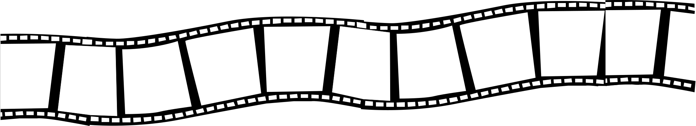
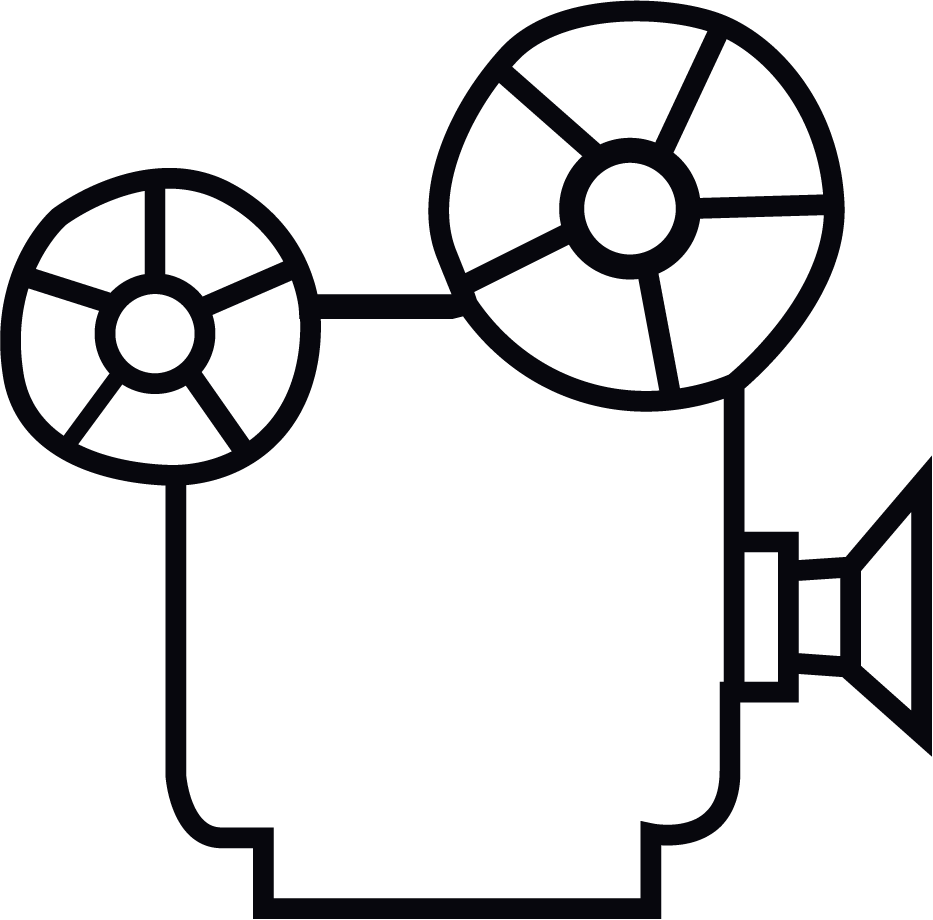
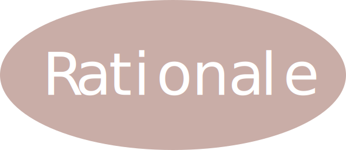
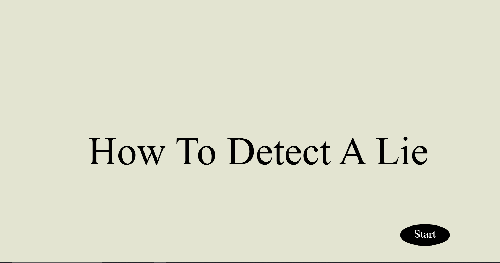
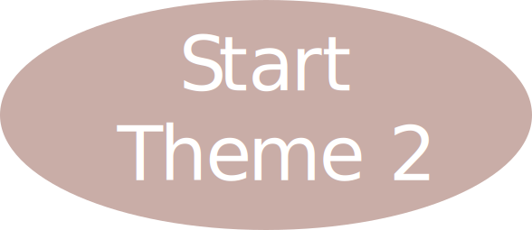

Hi
my name is
Vashist
And I am here to tell you about me
what I am a huge fan of?
Movies!
what is my favourite music genre?
Rap
Click the answer if you want to see how I implemented rap into my project!
I have a hard time describing my personality and a solution to the problem was to ask a few friends of mine to describe me on the next page!
what is my favourite music genre?
Rap
Click the answer if you want to see how I implemented rap into my project!
I have a hard time describing my personality and a solution to the problem was to ask a few friends of mine to describe me on the next page!
I chose black and white to keep with the theme of of the 1970s when serial killers were at large. when I think of an agent, I think james bond, mission impossible etc. So i incorporated the cliche spy stereotypes like the james bond gun barrel sequence. the intense training exercises, the fancy spy music, the mission impossible ceiling drop sequence and the classic spy suit. I had black lining to outline the objects and I had minimal curves to replicate the style of cartoons back in the 20th century.

Movies are a big part of my life and I was not going ignore my passion for movies and creativity. Movies are my escape from this world and I hope to one day create something that helps others escape reality for just a moment or two. I hope you enjoy my James Bond'esque theme!


I challenged myself in theme 2 with the use of
I chose this particular infographic because, out of the three infographics I chose, this one had the most substance in terms of useful information. For this project I tried using my limited knowledge of javascript to create a minimalistic styled interactive design. I have always been a fan of the minimalistic style because it does not overwhelm me as much as other styles do. I mainly have clicking interactive pieces because, I tried keeping it as user friendly as possible and not too complicated. This is very different from my first project. my first project had a lot of different animations made within adobe animate and a lot of sound effects. For this project, i tried keeping it simple and used only background jazz music to fit the "L.A. Noir" and "The Jazz Detective" theme.

For theme 3 I wanted to EXPRESS myself
passionatly
tremendously
respectfully
kinectally